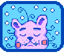

File:Weight.png
No higher resolution available.
Weight.png (48 × 48 pixels, file size: 410 bytes, MIME type: image/png)
Licensing
|  | This file (or parts of it) is copyright © ConcernedApe 2016
This screenshot, texture, audio, song, or other Stardew Valley asset, or derivative of Stardew Valley assets, does not fall under the Stardew Valley Wiki's Terms of Service but is freely usable on this wiki. |
File history
Click on a date/time to view the file as it appeared at that time.
| Date/Time | Thumbnail | Dimensions | User | Comment | |
|---|---|---|---|---|---|
| current | 07:18, 3 February 2017 |  | 48 × 48 (410 bytes) | Margotbean (talk | contribs) | transparency, size |
| 17:23, 10 March 2016 |  | 44 × 44 (212 bytes) | Taur urgas (talk | contribs) |
You cannot overwrite this file.
File usage
The following 33 pages use this file:
- Abby's Planchette
- Bone Sword
- Claymore
- Combat
- Crit. Chance
- Crit. Power
- Crystal Dagger
- Dark Sword
- Defense
- Dragontooth Club
- Dragontooth Shiv
- Dwarf Dagger
- Dwarf Hammer
- Forge
- Galaxy Dagger
- Galaxy Hammer
- Infinity Dagger
- Infinity Gavel
- Iron Edge
- Kudgel
- Lava Katana
- Meowmere
- Neptune's Glaive
- Ossified Blade
- Rings
- Shadow Brute (dangerous)
- Speed
- Tempered Broadsword
- Tools
- Weapons
- Weight
- Wind Spire
- Wood Mallet
{kind=link}